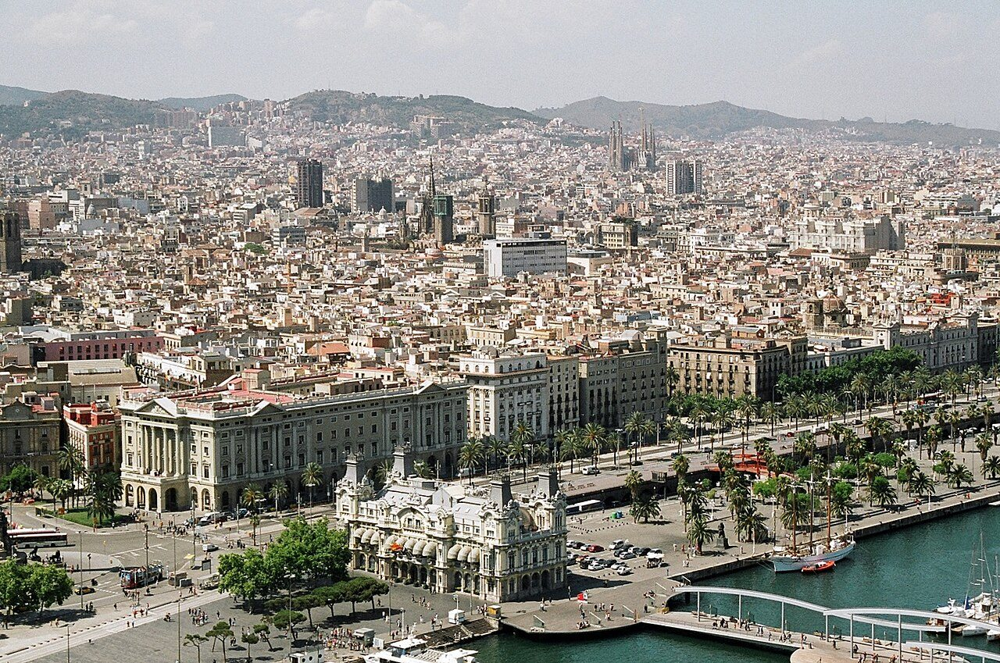

DAY00
12/25（金）出発
夜の便で上海へ
成田から上海乗継でバルセロナへ
- 夜19:30 成田T1発 CA920 → 22:15 上海浦東T2着（日本時間／中国時間）予約済み
時刻と移動の詳細
- 翌00:45 上海発 CA839
- 07:25 バルセロナT1着
SPAIN · 2026 — 2027
2026/12/25（金）→ 2027/1/5（火） · 大人3名
バルセロナ4泊 → マドリード4泊 → バルセロナ近郊1泊
時刻はスペイン時間。日本発着は日本時間、上海発着は中国時間で記載しています。
往路：12/25 CA920 → 12/26 CA839
復路：1/4 CA840 → 1/5 CA919

12/25（金）出発
成田から上海乗継でバルセロナへ

12/26（土）バルセロナ
大聖堂 → ゴシック地区 → ボルン → カネロネスの夕食
Can Culleretes が 12/26 休みなら同じ地区のカネロネスを出す店へ（12/26 の営業は予約時に確認）
🏨 Oriente Atiram Hotel Barcelona

12/27（日）タラゴナ日帰り
水道橋 → 円形闘技場 → 競技場 → カルソッツ → 大聖堂
注意: 中央市場は日曜休み。遺跡（円形闘技場・競技場）は日曜 9:30–14:30、大聖堂は日曜 14:00–18:00 なので、遺跡を先に回る
カルソッツが無ければ El Llagut など魚介のロメスコ（cassola de romesco）の店へ。夕食は近場なら Los Caracoles と入れ替え可
🏨 Oriente Atiram Hotel Barcelona

12/28（月）ガウディの日
サグラダ・ファミリア → グエル公園 → カサ・ミラ → カサ・バトリョ
雨ならグエル公園を短くし、カサ・バトリョを先に
🏨 Oriente Atiram Hotel Barcelona

12/29（火）モンセラット日帰り
修道院と黒い聖母 → 美術館 → 夜はフラメンコ
注意: 少年聖歌隊（Escolania）は12月下旬は冬休みで歌わない可能性が高い
霧や強風の日は景色が見えないため、行くのを朝に判断。行かない日は市内でカタルーニャ音楽堂や Sant Pau へ
🏨 Oriente Atiram Hotel Barcelona

12/30（水）バルセロナ → マドリード
ブケリア市場 → カタルーニャ音楽堂 → 列車 → ソフィア王妃芸術センター
列車を14時台にできればグエル邸（Palau Güell）を11:15に追加
🏨 Room Mate Mario（マドリード）

12/31（木）マドリードで年越し
プラド美術館 → 王宮 → 年越しディナー → ソル広場のカウントダウン
注意: 王宮の12/31閉館時刻は情報が分かれる（15:00か17:00）。13:45に出れば問題ない
ソルは入場規制で満員になると入れない。入れなければホテルのテレビで一緒に
🏨 Room Mate Mario

1/1（金）マドリード元日
サン・ヒネス → マヨール広場 → レティーロ公園 → デボド神殿の夕日 → Botín
注意: San Ginés・La Campana・Botín の1/1営業は未確認。Botín は予約時に確認
La Campana が休みならマヨール広場周辺の営業店のボカディージョ
🏨 Room Mate Mario

1/2（土）グラナダ日帰り（予定）
直通の高速列車でグラナダへ → アルバイシン → アルハンブラ
Renfe は 9/24 時点で 12/12 分まで発売。1/2 の列車は年始ダイヤ発売後に要確認。
注意: 直通は Renfe の AVE だけで1日4本前後（12月の実績: 行き 07:20・13:35・16:40・18:35、帰り 06:50・11:04・15:00・18:05）。18:05 を逃すとその日の直通は無い。Córdoba 経由より直通が速い。アルハンブラの券は公式（tickets.alhambra-patronato.es）で。冬は 08:30–18:00
トレド一日（Atocha から Avant 約33分。土曜は大聖堂を朝から見られる。旧市街・サント・トメ教会・エル・グレコ美術館・大聖堂）
🏨 Room Mate Mario

1/3（日）マドリード → バルセロナ
エル・ラストロ → La Bola のコシード → 夕方の列車でバルセロナへ
トレド半日（1/2 の夜に元気なら。09時台 Avant → 旧市街・サント・トメ教会・エル・グレコ美術館 → 14時台で戻る。日曜の大聖堂内部は14:00からなので外から。予約不要・列車は前夜にアプリ、満席なら ALSA バス。この場合 La Bola は取消）
🏨 B&B HOTEL Barcelona Viladecans
1/4（月）帰国
タクシーで空港 → 10:40 発
注意: シェンゲン圏外の国際線なので3時間前に空港へ
1/5（火）帰国
上海 14:25 発 → 成田 18:10 着（日本時間）
その日に食べたい名物を、旅程から。
カネロネス（1786年創業）
要予約・12/1海辺のパエリア
要予約・12/1カルソッツとロメスコ
カルソッツの店は要確認。カルソッツが無ければ El Llagut など魚介のロメスコ（cassola de romesco）の店へ。
カタツムリ煮込み・パエリア（1835年創業）
要予約・12/1ディナー＋フラメンコ
要予約・12/1ウエボス・ロトス
要予約・12/1地下の酒蔵でマドリード料理
要予約・12/1年越しディナー（1839年創業）
要予約・11/15チョコラテ・コン・チュロス
予約不要イカのボカディージョ
予約不要子豚の丸焼き（1725年創業）
要予約・12/1グラナダのタパス（1870年創業）
予約不要コシード・マドリレーニョ
要予約・12/1朝食／クレマ・カタラナ
予約不要グラシアでピッツァ
予約不要山上のビュッフェ
予約不要軽くタパス
予約不要09:00入場、09:15 生誕のファサードの塔。
入口はマリーナ通り側。
12:30 グエル公園。時間指定券が必須。
雨なら短くし、カサ・バトリョを先に。


16:00 カサ・ミラ → 17:15 カサ・バトリョ。
どちらも時間指定。
大聖堂 → 王の広場 → ゴシック地区。
ボルン地区とサンタ・マリア・デル・マルへ。
水道橋 → 円形闘技場 → 競技場（Circ）。
午後は大聖堂と地中海のバルコニー。
岩山の修道院と黒い聖母。
午後はモンセラット美術館へ。
世界遺産の音楽堂。
10:00から約55分のガイドツアー。
ピカソ「ゲルニカ」。
水曜は19:00–21:00無料。
10:00から代表作に絞って。
12/31は14:00まで。

12:15からマドリード王宮。
13:45に出て昼食へ。
グラナダ日帰り（予定）
ナスル朝宮殿・ヘネラリフェ・アルカサバ。
ナスル朝宮殿は券の時刻に厳守。

レティーロ公園 → アルカラ門 → シベーレス広場。
水晶宮は2027年6月まで修復中で外から。
1/2代案／1/3半日
予約不要トレド一日（Atocha から Avant 約33分。土曜は大聖堂を朝から見られる。旧市街・サント・トメ教会・エル・グレコ美術館・大聖堂）
トレド半日（1/2 の夜に元気なら。09時台 Avant → 旧市街・サント・トメ教会・エル・グレコ美術館 → 14時台で戻る。日曜の大聖堂内部は14:00からなので外から。予約不要・列車は前夜にアプリ、満席なら ALSA バス。この場合 La Bola は取消）
19:30 → 22:15（日本時間／中国時間）
予約済み00:45 → 07:25（中国時間／スペイン時間）
予約済み10:40 → 翌05:55（スペイン時間／中国時間）
予約済み14:25 → 18:10（中国時間／日本時間）
予約済み08:30 → 09:03／17:26 → 18:37
要予約・発売中Regional は当日購入可
13:19 → 16:38（候補）
要予約・発売中07:20 → 10:54／18:05 → 21:53（候補）
要予約・発売待ちRenfe は 9/24 時点で 12/12 分まで発売中・延長待ち。
直通は Renfe の AVE だけで1日4本前後（12月の実績: 行き 07:20・13:35・16:40・18:35、帰り 06:50・11:04・15:00・18:05）。18:05 を逃すとその日の直通は無い。
17:57 → 20:59（候補）
要予約・発売中列車の購入は父。取消できる運賃を選ぶ。
La Rambla 45, Barcelona
+34 93 302 25 58チェックイン／アウト
14:00／12:00・朝食 7:00–11:00
無料取消：12/25 14:00まで
Calle de Campomanes 4, Madrid
+34 915 488 548チェックイン／アウト
15:00／12:00・時間外チェックイン不可
無料取消：12/29 12:00まで
Av. Olof Palme 24, Viladecans
+34 93 299 36 58チェックイン／アウト
14:00／12:00・朝食 6:00–10:00
無料取消：1/2 18:00まで
Cafè de l'Òpera：La Rambla 74
Sartoria Panatieri：Carrer de l'Encarnació 51
Tablao Cordobés：La Rambla 35
Casa Lucio：Cava Baja 35
Bodega de los Secretos：Calle San Blas 4
Casa Enrique：Acera del Darro 8
| 何を | 期限 | 担当 | 状態 |
|---|---|---|---|
| アルハンブラ（ナスル朝宮殿） | すぐ | 父 | 要予約・すぐ |
| 列車 12/27・12/30・1/3 | 早いほど安い | 父 | 要予約・発売中 |
| 列車 1/2 グラナダ往復 | 年始ダイヤ発売後すぐ | 父 | 要予約・発売待ち |
| Lhardy 年越しディナー | 11/15 | — | 要予約・11/15 |
観光施設の予約グエル公園・カサ・ミラ・カサ・バトリョ・カタルーニャ音楽堂・プラド・王宮 | 12/1 | — | 要予約・12/1 |
食事の予約Can Culleretes・Xiringuito Escribà・Los Caracoles・Tablao Cordobés・Casa Lucio・Bodega de los Secretos・Botín・La Bola | 12/1 | — | 要予約・12/1 |
| サグラダ・ファミリア | — | 父 | 予約済み |
| ホテル3件・航空券 | — | 父 | 予約済み |
列車 12/27・12/30・1/3 は発売中。1/2 グラナダ往復は年始ダイヤ発売後すぐ。取消できる運賃を選ぶ。
カード裏面の番号（出発前にメモ）